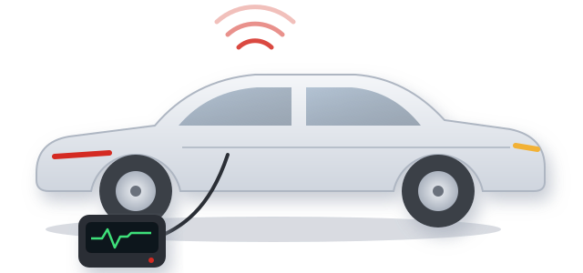

Te llevamos a la ITV
¿No puedes ir tú? Recogemos tu vehículo, lo llevamos a la ITV y te lo devolvemos. Tú no tienes que hacer nada.
Taller multimarca familiar especializado en diagnosis electrónica y mecánica de vehículos europeos. Te decimos qué tiene tu coche, cuánto cuesta arreglarlo y lo dejamos listo. Y si toca ITV, te lo llevamos nosotros.

Reparamos y mantenemos coches de todas las marcas, con presupuesto previo y explicándote lo que hacemos.
¿No puedes ir tú? Recogemos tu vehículo, lo llevamos a la ITV y te lo devolvemos. Tú no tienes que hacer nada.
Equipos de diagnosis profesional para localizar averías y testigos encendidos en todas las marcas, incluidas las averías complejas.
Motor, embrague, distribución, frenos, suspensión y dirección. Reparaciones con presupuesto previo.
Baterías, arranque, carga, iluminación y sistemas eléctricos y electrónicos del vehículo.
Cambios de aceite y filtros, revisiones periódicas y puesta a punto según el plan del fabricante.
Cambio de escobillas para que veas bien con lluvia. Pregúntanos por otros recambios de mantenimiento.
Sin sorpresas: primero sabemos qué le pasa al coche y después decides tú.
Revisamos el vehículo y conectamos el equipo de diagnosis para encontrar el origen de la avería.
Te explicamos qué tiene y cuánto cuesta arreglarlo antes de empezar.
Lo reparamos y te lo entregamos listo para circular.
Taller Dovi es un taller familiar que lleva más de 36 años en la misma dirección de Sax. Trabajamos con todas las marcas y estamos especializados en diagnosis de vehículos europeos.
Formamos parte de la red de talleres Grupo ASER.
Solemos tener la agenda llena con antelación, así que te recomendamos llamar para pedir cita.
Clientes de Sax y alrededores:
Lo que más nos preguntan en el taller.
En la Av. Historiador Bernardo Herrero, 25, 03630 Sax (Alicante), en la misma dirección desde hace más de 36 años.
Sí. Recogemos tu vehículo, lo llevamos a la ITV y te lo devolvemos, para que no tengas que ir tú.
Sí, somos un taller multimarca y estamos especializados en diagnosis electrónica de vehículos europeos.
Es recomendable. Solemos tener la agenda llena con antelación, así que llama al 965 474 129 para pedir cita.
Sí. Además de Sax, nos visitan clientes de Villena, Elda, Petrer, Salinas y alrededores.
Llámanos para pedir cita o un presupuesto:
Av. Historiador Bernardo Herrero, 25
03630 Sax (Alicante)